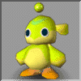

|
Questions and Answers from the Chao Doctor. Send the Chao Doctor an email and ask a question. We will post questions and answers here!
A MESSAGE FROM THE CHAO DOCTOR
First of all, I would like to thank everyone who visits my column, and would like to send an extra special thanks to those that send questions to me. I'm so thrilled, in fact, that I will be giving away a cool Plush Chao Animal to the well-versed Chao Breeder.
 The Chao Plush Animal will go to the first Chao Breeder that can accurately tell me how to breed this creature on the left! Remember, be specific! Send me email with your recipe for this Chao! Good luck to you all! The Chao Plush Animal will go to the first Chao Breeder that can accurately tell me how to breed this creature on the left! Remember, be specific! Send me email with your recipe for this Chao! Good luck to you all!
WHAT'S WITH THE FLOWERS?
Hi Doctor Dude. Our chao keep growing flowers before they fallasleep. Why do they do that.
jcooper3
Flowers eh? That means your Chao is ready to mate! When you see a Chao with a flowerbed around it, take another adult Chao and sit it down in the flowerbed. The result? A new Chao Egg! Sometimes even two!
EMBLEMS OR EMERALDS?
what i heard that you need a lot of embrols for
the new blackmatket but how do you get a lot of
embrols when ther are only seven and half are
stolin by egg man and anthore thing i have a
bunny chaos that when i was in the garden he
started to fly how do i make him fly agian
Ramsey Cook
Hmm. I think you are talking about the Chaos Emeralds. The Chao Black Market will cost you Emblems, not Chaos Emeralds. Emblems are collected by meeting certain requirements in the game, and also by progressing through levels. For example, you can get an emblem by finishing a level. You can get another emblem by finishing the level with a certain amount of rings. Again, you can get another emblem by beating the level in a certain amount of time. You can also find emblems hidden in the Adventure Fields. Good luck!
ANTIQUE SHOP CHAO EGG (LIKE I SAID)
When tried to take an egg from the Mystic Ruins
and put it in place of the green egg in the
shop (like you said), well when I took the egg
on the train the egg vanished when I got to
Station Square. Can you help?
Jameson
I did not say replace it with another Chao Egg. You will find a rock somewhere in the Adventure Field. Try that.
SHAPE SHIFTING AND CHAO BREEDING SANS VMU
Hi, I have a standard Chao with around 300 points for everything. How can I get my Chao to change shape? It's alredy absorbed a rescued animal but didnt change shape... Also, how can I breed Chao from within the main game (not on the VMS)?
John
John, it'll take more than one animal to change the shape of your Chao. Try it with lots and lots and lots of animals! Also, try with the same type of animal! You can get different results using different animals. Breeding without the VMU? Just wait until your Chao is old enough and ready to mate, you will see a bed of flowers around it. When that happens, just place another adult Chao in the flower bed and you have an Egg!
CHARACTERS AND CHAO
does each character in "sonic adventure" have a
specific effect on the a-life?
samson maciel
Chao generally are friendly creatures, but it takes a special liking to the character that takes care of it best. Try Evaluating your Chao and you will see which character is it's favorite.
BECOMING AN ADULT
i was wondering how to get my chao an adult.
and about that sumo chao.what does he look
like.
Daniel Wood

Daniel, your Chao will become an adult in due time. Just make sure it's constantly getting attention, exercise, and a good helping of Chao fruits and rescued animals. About that Sumo Chao, here it is! Cute little fella isn't it?
GETTING TO 999
How do people get all of their chao's
attributes up to 999? I have tried to but it
just takes too long.
Mr. Victory
Well, Mr. Victory, it does take alot of patience, alot of love and a whole lot of attention. Try Walking your Chao and playing the Fruit game. The fruit you find in the Chao Adventure game really boosts your Chao's stats!
CHAO PICTURES AND THE INTERNET
Hey whats up doc I was wondering, is there any other sites on the internet where I can download other Chaos and another thing, in the Chao Daycare why not get people to take pics of there chaos and put them in the daycare centre or if they cannot, why don't you do it?
Hannah
Hannah, unfortunately there is no way to take a digital picture of your Chao using the Dreamcast. As for other internet sites with Chao, I think that so far this is the only one. Me take pictures of each Chao in the Daycare??? I don't think Santa has enough elves to do even that!
SAYING GOODBYE
doc, i have a light chao. i was so happy when
it matured!! me and my chao love each
other,and everything bout is perfect (even
affection at 999%). but my chao is 20, i don't
want him to die!!!!!!!!! i know chao
rencarnate, but he will not be a lamp head and
his stats will reset. how can i make his
rencarnated self an ultra light chao? CAN I
EVEN DO IT?
Daniel Elliot
I feel your pain Daniel, however Chao do have a life cycle. It's hard to say goodbye, I know, but in the end we all learn and grow from it.
CHANGING COLORS
How do you create a light chao? Or even a pink chao. It seems impossible to
find any light colored chaos. Doc, Where are they? Is it that I have all
drak chaos and the light colored ones are lost or something. Or is their a
special egg?
Branden Pinney
Hey there Branden. Chao change colors depending on what animals you give them. Try it with lots and lots of animals! Better yet, pick one specific animal type and give it to your Chao exclusively! You will notice a change soon.
THE SUICIDAL CHAO
Doccy C, I went into a chao race and noticed an egg. This was strange as I hadn't bred any chao recently. I hatched it and it suddenly cacooned itself and afterwards, itwas gone! Had I bred a chao that was okay enough to reincarnate once but inits secondlife was suicidal? (Could you say hi to my friend in New Zealand?)
Roydsy `Rythm Badge´ Maestro
Doccy C, that's a new one. Roydsy, what you have there is a Chao that has reached the end of it's life cycle. If you treat your Chao with better care, they would reincarnate and become babies again, instead of up and disappear. Try to keep your Chao away from harm next time and keep it's affection percentage in the high numbers. If your Chao had a great life with you they will return to you for more.
 PREVIOUS LETTERS PREVIOUS LETTERS
Do you have a question on how to raise Chao? Do you wonder why your Chao act the way they act? Would you like to learn how to be a good Chao parent? Ask the Chao Doctor!
Send the Chao Doctor an email and ask a question. We will post questions and answers here!

|